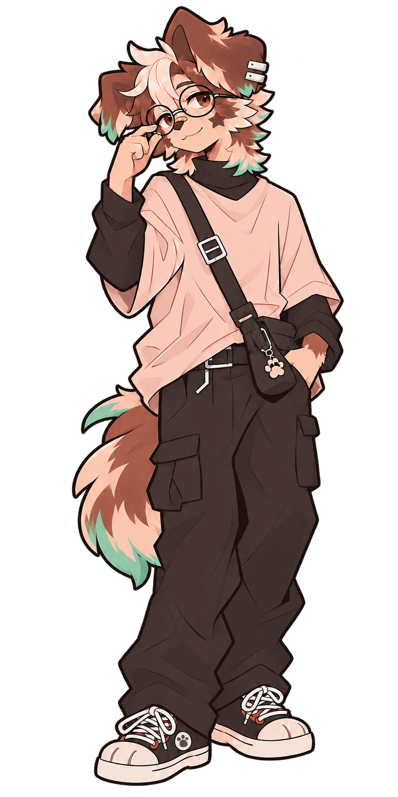

Portfólio / 2026Goiás, BrasilDisponível para projetos
Criador de conteúdo · Editor de vídeo
Eu crio históriasque dão play.
Sou Yuuki, conhecido nas redes como Yuuketts. Transformo gameplay, ideias e momentos espontâneos em vídeos com ritmo, personalidade e comunidade.

Identidade visualChokki
Edição de vídeo✦Conteúdo gamer✦Short-form✦Lives✦Thumbnails✦
01
Sobre mim
Conteúdo com
intenção.
Crio na internet desde 2018 e mantenho meu canal atual desde 2022. Meu trabalho mistura edição, jogos, humor e a energia de quem realmente vive cada projeto.
Produzo gameplays, vídeos editados, cortes e transmissões. Em paralelo, estudo Engenharia de Software, conectando criatividade e tecnologia em tudo que construo.
Ver trabalhos selecionados ↘02
Trabalhos recentes
Selecionados
do canal.
Quatro publicações recentes que mostram variedade de jogos, narrativa e edição.


03
Experiência & habilidades
Do bruto ao
publicável.
Planejamento, corte, ritmo, acabamento visual e publicação — com olhar de criador para cada etapa.
Edição de vídeo
Gameplays, vídeos longos e cortes verticais com ritmo, timing e narrativa.
VEGAS Pro 19Conteúdo & live
Criação para YouTube, TikTok, Instagram e Twitch, do conceito à publicação.
OBS StudioVisual & thumbnail
Composição, tratamento e peças de apoio para uma identidade consistente.
Adobe PhotoshopTecnologia
Estudante de Engenharia de Software com interesse em experiências digitais.
Formação prevista: 2030Experiência profissional2023
Edição recorrente de gameplay e Shorts
Primeira experiência profissional remunerada, transformando transmissões brutas em vídeos e entregando Shorts semanais para um criador de conteúdo.
Tem um projeto em mente?